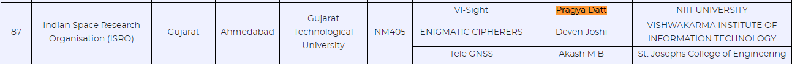
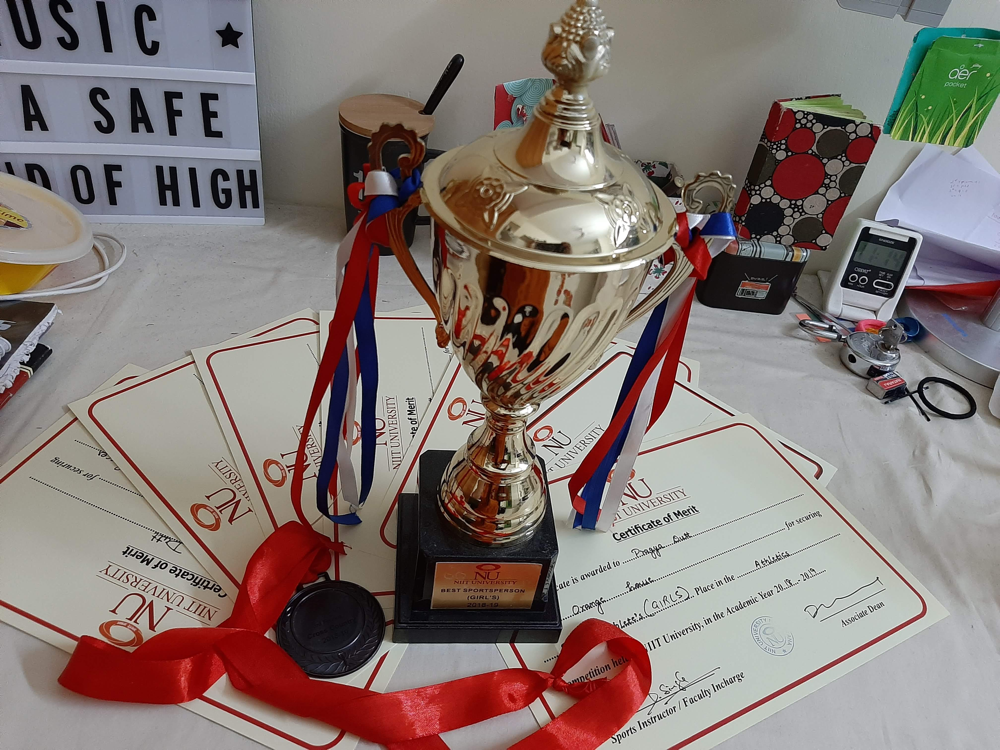

Smart India Hackathon 2020 - 'GRAND FINALIST'- Shortlisted by ISRO - TOP 10%
Smart India Hackathon is the largest national level hackathon in India. It provides students from various colleges/institutes across India a platform to solve some of the pressing problems we face in our daily lives, and thus inculcate a culture of product innovation and a mindset of problem solving.
Problem statements from various government departments, PSUs, industries and NGOs are posted. Team leads are supposed to register along with their team to participate. We chose a problem posted by the 'Indian Space Research Organization'- Processing, visualization and application development of raw GNSS data on Android smartphones. We cleared the university level 'internal hackathon' and proceeded towards submitting our idea to ISRO. Our solution proposal was shortlisted and we were amongst the top 10% of the teams to be selected, thereby going straight to the 'Grand Finale'.
PROPOSED TECHNOLOGIES: Java, Android Studio IDE, GNSS Logger, AnyChart, Android.location
LABELS: Leadership, Strategic, Confidence, Extrovert
Innovation Marathon 2019, Inventivepreneur Foundation – Shortlisted in TOP 3
Center for Innovation, Incubation and Entrepreneurship (CIIE), NIIT University in collaboration with the Inventivepreneur foundation had organized an ideathon involving funding to be provided to the top selected teams. Our team was one of them.
We proposed a solution for bridging the gap between the government and the general public in the form of an Android application. Our idea was to make an app which allows the public to post local issues where government assistance is needed. Issues could be upvoted in order to be pinned at the top and to be brought primary attention to. Issues could also be reported in order to avoid fake reports. Respective government agencies can monitor this activity and resolve accordingly. This idea promotes transparency and allows the government and the public to be on the same page.
PROPOSED TECHNOLOGIES: Django, Python, Android Studio IDE, Java
LABELS: Innovation, Strategic, Presentation Skills
Best Athlete Award 2018-19 – NIIT University
"Athleticism is about dedication and focus. It has helped me streamline my mind, thereby reflecting on my work ethics."
Participating in sports makes you experience competition and makes you realize that success does not come easy. I maintain my body fitness which helps me focus more and gives me the strength to get on my toes and achieve new milestones.
